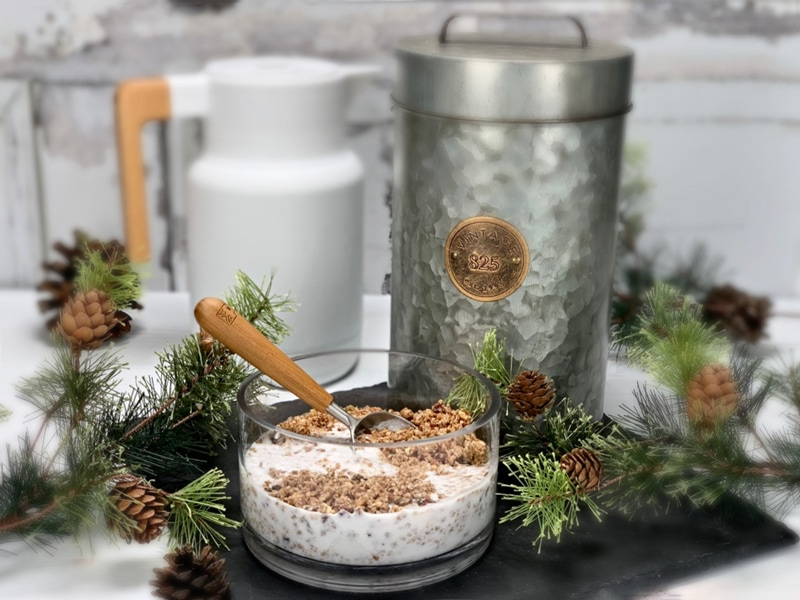
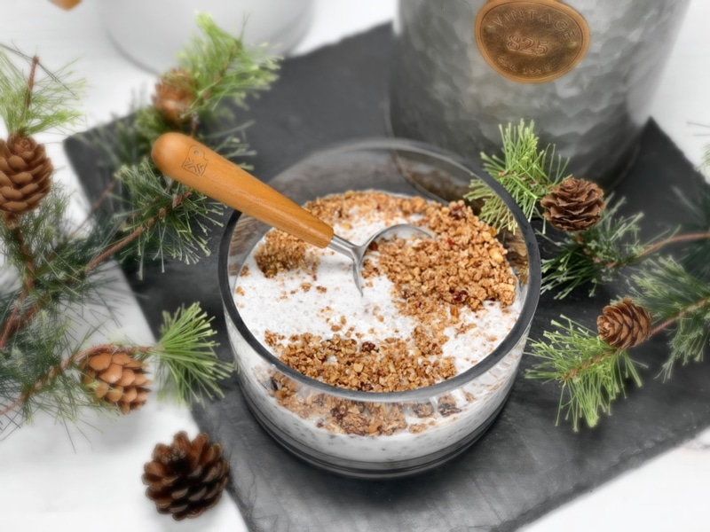
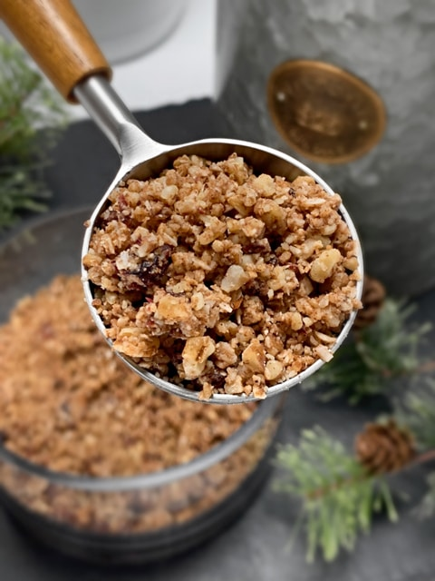

Nutty Nugget Cereal
A great way to satisfy hunger at the breakfast table is with these tiny crunchy clusters made with pure, whole food ingredients. This breakfast cereal is grain-free, vegan, corn syrup free… yet is loaded with sprouted nuts, dried fruit, and spices—making it completely gluten-free and Paleo-friendly.

I do realize that most granolas and mueslis are made with a base of oats… but we are breaking the grain-chain (I sense a song in this hehe) right here, right now. Out with the oats and in with the sprouted nuts, which leads me to share that that I enjoy all sorts of textures when it comes to my cereal. I love chunks of granola swimming in almond milk, but I do adore the mouth-feel of small semi-crunchy golden nuggets. Oh jeez, my mouth is watering just in writing this!
If you are new to muesli-style cereals, let me share a few enticing ways to enjoy them. First off, eat it like you would eat any cereal. The most basic and common way to eat muesli is just as you would eat a bowl of cereal, adding about a half cup of your favorite milk to an equal helping of muesli in a bowl. You can eat it right away biting down on the crunchy nuggets or you can let it soak (even overnight) to create a more porridge-like texture. Both are downright amazing if you ask me.

Looking for a bit more variety? Instead of milk, try your favorite brand of plain yogurt for probiotic benefits and a different flavor and texture. Or perhaps it is a brisk cold day outside and you want to fill your tummy with something warm and comforting? Try heating the milk, then letting the muesli soak for a few minutes in the warm milk to soften it slightly, making it a bit more like oatmeal. And let’s not forget, like any cereal, it’s also great to snack on all by itself (no dishes or utensils to wash).
So go on… make this recipe and add it into your weekly menu. Rotating our foods automatically rotates our nutrients and that my friends is exactly what we all need. I hope you enjoy this recipe. Please comment below and have a blessed day. amie sue
P.S. When I was taking pictures of this cereal for the blog, I misplaced the bowl. Yea, I know… how does one lose a bowl of cereal? Trust me; this isn’t the first time. Haha. I was doing a balancing act trying to put stuff away when I sat the bowl down. I got sidetracked, and plum forgot about it. About four hours later (yeah yeah, I know) I found it, or should better say, I stumbled upon it… the texture was amazing! Just like a porridge. Just like I like it.
Ingredients
- 2 cups (245 g) pecans, soaked
- 2 cups (100 g) unsweetened, dried coconut flakes
- 1 cup (106 g) walnuts, soaked
- 1/2-1 tsp (3-6 g) Himalayan salt
- 1 Tbsp10 g) Pumpkin Spice
- 1/2 tsp (2 g) ground nutmeg
- 1-2 cups ( 175 g – 345 g) dried cranberries
- 1/4 cup (76 g) maple syrup
Preparation
- In the food processor fitted with the “S” blade, give the pecans, coconut flakes, walnuts, salt, pumpkin spice, and nutmeg a few quick pulses… just enough to break them down.
- Add the cranberries and maple syrup. Process until the overall texture is like small nuggets.
Dehydrate:
- Line the dehydrator sheets with non-stick sheets.
- Loosely spread the mixture on the sheets.
- Do not have it any thicker than 1″ or the dry time will increase.
- Dehydrate at 145 degrees (F) for 1 hour, then reduce to 115 degrees (F) for 10+ hours, until completely dry.
- Dry time will vary based on the climate, humidity, how thick the batter is spread out, etc. So use the dry time as a guideline.
- Be sure all the moisture is removed to increase shelf-life.
Storage:
- Store in airtight mason jars for 2-3 weeks or so.
- Store in the freezer for up to 3 months.
Usage (recap)
- Granola snack
- Cereal with milk
- Topping for yogurt
Culinary Explanations:
- Why do I start the dehydrator at 145 degrees (F)? Click (here) to learn the reason behind this.
- When working with fresh ingredients, it is important to taste test as you build a recipe. Learn why (here).
- Don’t own a dehydrator? Learn how to use your oven (here). I do believe that it is a worthwhile investment. Click (here) to learn what I use.

© AmieSue.com